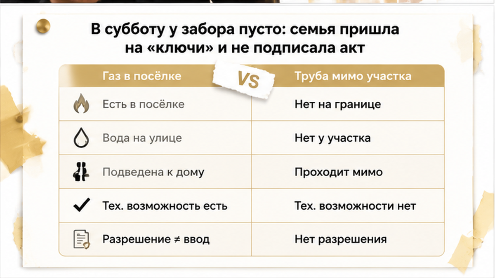
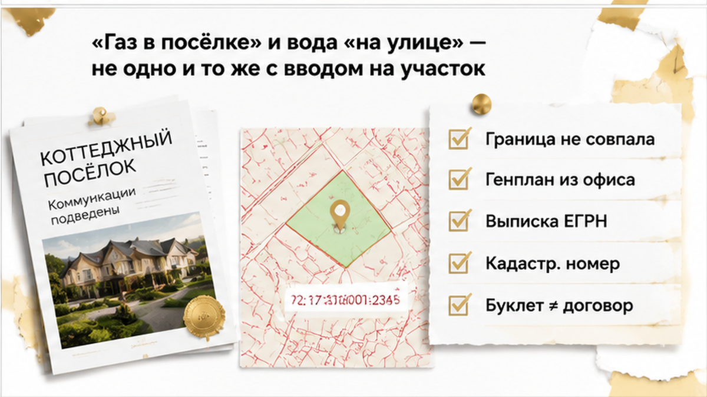
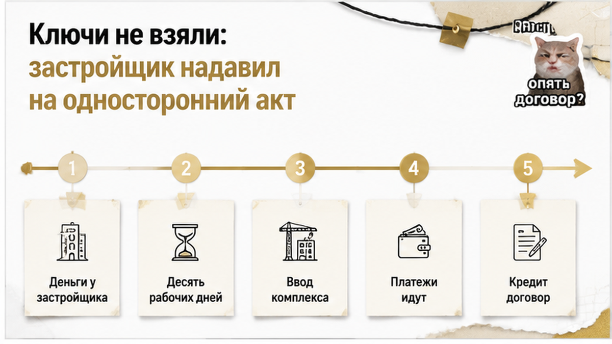
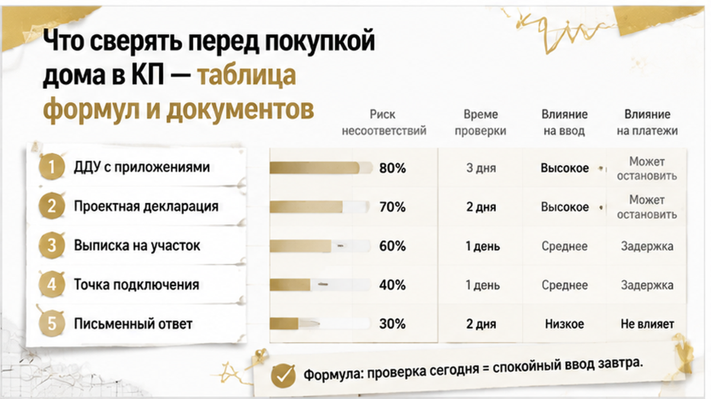

Семья с двумя детьми приехала за ключами от дома в коттеджном посёлке под Тюменью. Год после регистрации ДДУ. У забора пусто: ни точки газа, ни точки воды. Граница участка в выписке легла не так, как на генплане. Акт не подписали, ключи не взяли. Транш по ипотеке банк тоже не выдал.
Я Святослав Шакин, The Риэлтор, Тюмень. Такие приёмки разбираю по документам, а не по буклетам: Telegram — Tyumen_Rieltor и MAX. Сомневаетесь в формулировке про газ и воду в своём ДДУ — пришлите её текстом, посмотрим вместе.
Выдачу назначили на утро субботы. Так делают часто: вся семья в машине, дети сзади, настроение «сегодня наконец заберём». Дом был достроен — свет заведён, окна на месте, отделка в объёме договора. А у границы участка, где на презентации стояли аккуратные значки «газ» и «вода», не было ничего: ни колодца, ни ввода, ни выведенной трубы с краном или заглушкой. Ровное место у забора. «Газ в посёлке есть, вода на улице, подключение — это отдельные заявки», — сказал менеджер. И предложил подписать акт, чтобы не задерживать выдачу. А следом добавил то, что добавляют почти всегда: иначе акт будет односторонний.
Отец открыл договор. Строки про вводы на участок там не нашлось — только общая фраза про сети посёлка и техническую возможность подключения. Мать достала папку: схема участка из приложения к ДДУ, выписка из ЕГРН. Сверили со схемой кадастра. Граница прошла не там, где её показывали пальцем по экрану в офисе. Два расхождения за один осмотр, и оба — не про обои и не про стяжку.

И вот здесь закон стоит на стороне покупателя — если покупатель пишет, а не кричит. По закону о долевом строительстве (214-ФЗ) дольщик вправе до подписания передаточного акта потребовать акт о несоответствии дома и не принимать объект, пока застройщик не исправит то, что должен по качеству. Мотивированный отказ — это не уклонение от приёмки. Вся разница в бумагах. Не «нет воды», а какие именно точки подключения отсутствуют, чему это противоречит, фото, видео, дата, подписи. Похожая логика была в истории, где ключи от новостройки в Тюмени перенесли на год, а деньги на эскроу уже лежали: всё держалось на том, что зафиксировано письменно.

Главная ловушка загородной покупки — короткое слово «есть». «Газ есть» означает пять разных вещей. Стоят они по-разному: от нуля действий до отдельного проекта, заявок и ваших денег. Первое — газ и вода подведены к границе участка: точка готова, остаётся довести до дома. Второе — есть техническая возможность подключения: подключиться в принципе можно. А кто, когда и за чей счёт делает ввод — вопрос отдельный, и чаще всего он ваш. Третье — сеть проходит по территории посёлка: труба по улице не доказывает ввод к вашему забору. Она может идти мимо, а ответвление не проектироваться вовсе.
Четвёртое — коммуникации входят в цену: тут важно, что именно входит — сама сеть, ввод, счётчик, оборудование в доме. Пятое — сеть относится к общему имуществу малоэтажного жилого комплекса: тогда срок готовности привязан к проекту всего комплекса, а не к вашему дому. С водой ровно так же. Центральная вода в посёлке — это не готовая точка на вашем участке. Разрешение на ввод дома в эксплуатацию тоже не значит «на участке всё подведено». Оно подтверждает одно: дом соответствует проекту и градостроительным требованиям. А не то, что вы завтра включите котёл и откроете кран.
Дом обязан соответствовать договору и проектной документации. Значит, вопрос всегда возвращается к тексту ДДУ с приложениями, а не к буклету. Рендер и цветной генплан договор не заменяют. Реклама в споре может иметь доказательственное значение, но базой остаются ДДУ, приложения и проектная декларация. Для малоэтажного комплекса в декларации есть отдельная часть — про проект, общее имущество, сети. Её видно в системе наш.дом.рф. Одобренный кредит от этого не спасает. История, где ипотеку одобрили, а регистрацию отменили из-за строки в ЕГРН, ровно об этом: банк проверяет свою сделку, а не полноту ваших коммуникаций.
Пока отец обходил дом, мать достала папку. Приложение к ДДУ с границами участка, выписка из ЕГРН. Рядом на телефоне — тот самый цветной генплан из офиса: аккуратные квадраты, дорожки, подпись «сети». На кадастровом плане граница прошла иначе. Разница была не в сантиметрах. Сдвиг менял главное: где заканчивается «своё» и начинается общая земля посёлка. А заодно и то, куда вообще должны прийти вода и газ.
Это вторая ловушка загородной покупки, и она тише первой. Буклет и рендер — маркетинг. Связывает вас только договор с приложениями и проектная декларация. Остальное — картинки на стене. Участок до аванса я смотрю по трём бумагам: выписка ЕГРН, приложение к договору с границами, документы по межеванию. Совпали — идём дальше. Разошлись — вы покупаете не то, что видели на презентации. И пока покупатель на осмотре смотрит обои, стяжку и напор в кране, я сверяю кадастровый номер. Он должен быть один и тот же в договоре, в приложении, в выписке, в передаточном акте.
Передаточный акт содержит характеристики и кадастровые номера объекта. Всплыл номер, которого вы раньше не видели, — это повод остановиться, а не подписывать «чтобы не задерживать выдачу». По малоэтажным комплексам есть ещё один документ, который почти не открывают, — проектная декларация в системе наш.дом.рф. Там отдельная часть про общее имущество и сети: чьи они, до какой точки их строит застройщик. Читается за вечер. До аванса это бесплатно, после — уже как повезёт.

Разговор у забора закончился как всегда: «Подпишите акт, коммуникации — формальность, всё подведём после». Родители не подписали. Вместо подписи — мотивированный отказ с конкретным перечнем: нет готовой точки газа на участке, нет точки воды, граница участка расходится с приложением к договору. Фото ровного места у забора, где должны были стоять вводы. Короткое видео обхода, дата. Ключи они не взяли, но подписи «как есть» тоже не дали.
Здесь путают две вещи, а путаница стоит денег и месяцев. Закон о долевом строительстве прямо разрешает: до подписания передаточного акта покупатель вправе потребовать акт о несоответствиях и не принимать дом, пока их не устранят (статьи 7 и 8 закона 214-ФЗ). Мотивированный отказ — это не уклонение от приёмки. Вся разница в мотивировке. «Мне не нравится» не работает. «Нет ввода газа и воды на участок, вот перечень, вот фото, вот дата» — работает. А брошенное менеджеру в чат «у нас тут воды нет» не фиксирует ничего: переписка есть, документа нет.
Дальше застройщик сделал то же, что делают все: напомнил про односторонний акт и позвал приехать ещё раз «без споров». Я никогда не говорю клиенту, что односторонний акт невозможен. Возможен: застройщик вправе передать дом сам, если покупатель не приходит и не принимает. Но у этого правила есть исключение — как раз для того, кто заявил о несоответствиях и потребовал акт. Поэтому спор пойдёт не про эмоции у забора. Он пойдёт по бумагам, оставленным письменно в тот же день.
А потом прилетело то, чего семья не ждала. Банк не выдал следующий транш по ипотеке. Не по закону — по их же кредитному договору, где выдача привязана к документам о передаче. Подписи под актом нет, значит нет и денег. Спор с застройщиком ипотеку при этом не отменяет: платить банку надо, пока договор жив. Похожий стопор я разбирал, когда застройщик сменил юрлицо, дольщикам прислали новый ДДУ, а эскроу не открыли — причина другая, ощущение у покупателя то же.
Спор не закрыт до сих пор. У семьи нет ключей, у застройщика нет подписанного акта. Обе стороны переписываются цитатами из закона.
Дом в коттеджном посёлке без газа и воды у забора — вы подпишете акт приёмки ради ключей и ипотеки или будете ждать, пока застройщик подведёт коммуникации?

Главная ошибка на загородном рынке не юридическая, а бытовая. Человек слышит «газ есть» и не задаёт второй вопрос — где именно. А между «труба идёт по улице посёлка» и «на моём участке стоит готовая точка» лежит год ожидания, отдельный договор, чужие деньги. Обычный покупатель проверяет посёлок глазами: дорога есть, фонари горят, у соседа дым из трубы. Значит, будет и у меня. Я до аванса смотрю четыре источника, и ни один не висит в офисе на стене: сам ДДУ с приложениями, проектную декларацию на наш.дом.рф, выписку ЕГРН на участок, письменные ответы застройщика — текстом, а не «менеджер сказал». Буклет с генпланом тоже идёт в спор, но базой остаётся договор. Ниже — формулы, которые звучат одинаково убедительно, а значат разное.
| Формулировка продавца | Что она может значить на деле | Чем проверяется | Что спросить письменно |
|---|---|---|---|
| «Газ в посёлке», «сети проходят по территории» | Труба идёт по улице. Ввод именно на ваш участок из этого не следует | ДДУ и приложения, проектная декларация в ЕИСЖС, схема сетей | Где точка подключения на моём участке и чья это обязанность |
| «Подведены к границе участка» | Застройщик обязан довести до границы. Ввод в дом дальше может быть вашим | Формулировка в договоре, схема с привязкой, срок исполнения | До какой точки, к какому сроку, что входит в цену |
| «Есть техническая возможность подключения» | Обещана не сеть, а возможность: заявки, договор о подключении, сроки и расходы могут быть вашими | Технические условия, договор о подключении, ответ ресурсоснабжающей организации | Кто подаёт заявку и за чей счёт делаются работы |
| «Коммуникации входят в цену» | Вопрос — до границы или до счётчика в доме | Раздел о цене и составе работ в ДДУ | Письменный перечень: что именно входит в цену |
| «Сети — общее имущество посёлка» | Сеть относится к общему имуществу малоэтажного комплекса, содержание — забота собственников | Проектная декларация, состав общего имущества по проекту | Кто содержит сеть после ввода и сколько платит собственник |
| «Вот ваш участок» (палец в генплан) | Границы на презентации и в кадастре могут не совпасть | Выписка ЕГРН, приложение к ДДУ с границами, документы по межеванию | Кадастровый номер участка и его границы по документам |
И отдельно про землю. Несовпадение картинки с кадастром — не «погрешность художника». Выписку ЕГРН я прошу до денег: после регистрации договора это уже не проверка, а разбор последствий.
Держите в руках ДДУ на дом в посёлке и не понимаете, что вам обещали — пришлите формулировку про коммуникации, разберу по пунктам: Telegram или MAX. Святослав Шакин, The Риэлтор, Тюмень.
Здесь чаще всего думают наоборот: «не подпишу акт — деньги на эскроу застынут, застройщик сам прибежит договариваться». С домами в малоэтажном комплексе это работает иначе. По правилам раскрытия счетов деньги могут уйти застройщику в течение десяти рабочих дней после разрешения на ввод всех домов и объектов общего имущества комплекса по проектной декларации. Событие привязано к вводу целого проекта, а не к вашей подписи на передаточном акте. Отказ от акта защищает ваши требования по качеству. Рубильником для чужих денег он не работает.
С ипотекой такая же история. Универсального правила «банк не даст остаток» в законе нет — всё решает кредитный договор. Выдачу там привязывают к регистрации права, к акту или к отдельному пакету документов. У этой семьи транш не выдали именно по их договору, и это стоило месяцев ожидания. Одобрение банка само по себе тоже ничего не закрывает — про это отдельный разбор, где семейную ипотеку одобрили, а эскроу не открыли. Спор с застройщиком ипотеку не приостанавливает: платежи идут, пока договор не прекращён.
Если дело всё-таки идёт к расторжению, возврат со счёта эскроу связан с погашением записи о регистрации договора. При ипотеке деньги могут направляться на счёт дольщика либо на залоговый счёт банка. Раскрыты застройщику — требовать возврат придётся у него. Сроков я в таких делах никому не обещаю. И постановление № 2227 от 30 декабря 2025 года, отложившее часть старых требований по неустойке до конца 2026 года, тело цены не отменяет: это разные вещи.
Ключей у семьи пока нет. Дети ждали переезд, кредит идёт, спор открыт. Но на руках перечень несоответствий, фото с видео осмотра, письменный мотивированный отказ — а не устное «подведём после». Это не победа. Это позиция, с которой разговаривают. Такой дом разбирается за один вечер: договор, приложения, выписка, проектная декларация на столе. До аванса это ещё проверка. Потом — работа с чужими сроками.